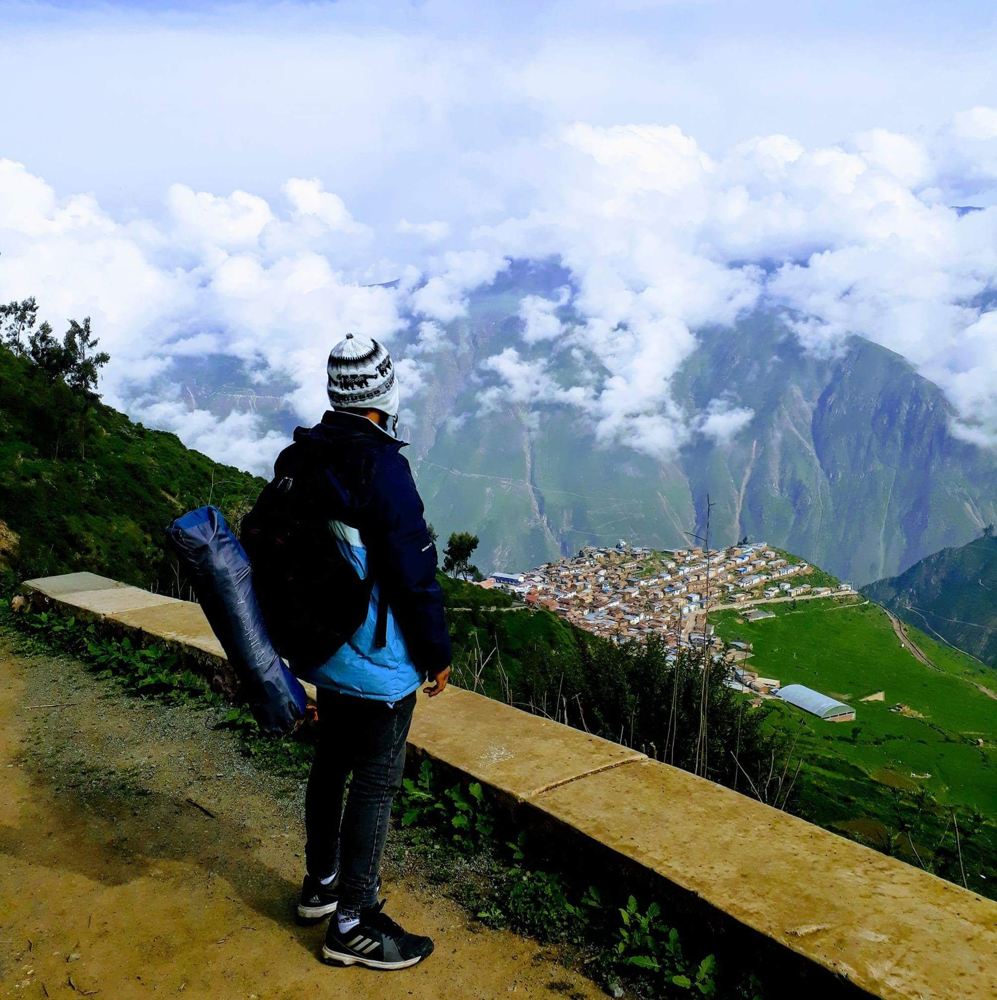

I am a Ph.D. student in Physics at the University of Houston, currently working as a Research Assistant in the Hosur Group, based in the Department of Physics and the Texas Center for Superconductivity.
My research focuses on quantum field theory in causally restricted spacetime domains, with particular emphasis on the emergence of thermality, information-theoretic structures, and their quantum-gravity aspects. I am also interested in quantum many-body theory, topological quantum matter, and anomalous transport phenomena.
- Student Ambassador, American Physical Society (APS), 2026-2027.
- Lydia Mendoza Fellowship, University of Houston, 2024-2026.
- Presidential Fellowship, University of Houston, 2023-2025.
- 1st Place, Quantum Computing Fall Fest, University of Houston, 2023.
- Ranked 1st in cohort, HEP section, M.Sc. in High Energy Physics, ICTP-EAIFR/University of Rwanda.
- Ranked 1st in cohort, B.Sc. in Physics, Universidad Nacional Mayor de San Marcos.
- Research Scholarship, UNMSM Vice-Chancellor's Office, 2018.
Selected publications and presentations are listed below.
Publications
-
Thermal nature of the causal diamond horizon: A hidden property of the inertial propagatorNada Eissa, Carlos R. Ordóñez, and Gustavo Valdivia-Mera.
-
Horizon brightened acceleration radiation entropy in causal diamond geometry: A near-horizon perspectiveNada Eissa, Carlos R. Ordóñez, and Gustavo Valdivia-Mera.
-
Path integral derivation of the thermofield double state in causal diamondsAbhijit Chakraborty, Carlos R. Ordóñez, and Gustavo Valdivia-Mera.
-
On the Unruh effect and the thermofield double stateGustavo Valdivia-Mera.
Presentations
-
Strange Metals and Black Holes: A Holographic CorrespondenceResearch Day, Department of Physics, University of Houston, Houston, TX, USA.
-
Thermal Nature of the Causal Diamond HorizonTINKUY 2026: "Un Panorama de la Física Teórica en el Perú", Lima, Peru.
-
Towards HBAR in the causal diamond near horizonIQSE Summer School on Quantum Science, Texas A&M University, Casper, WY, USA.
-
Near-horizon (conformal) aspects of black holes and the universality (robustness) of HBAR entropyAMO/IQSE Seminar, Texas A&M University, College Station, TX, USA.
-
Path integral derivation of the thermofield double state in causal diamondsAPS Global Physics Summit, Anaheim, CA, USA.
Lecture Notes
These lecture-style notes are informal manuscripts on topics related to my research interests. They are updated periodically. If you find typos or have comments, please feel free to contact me.
Black Hole Thermodynamics
- Notes will be added soon.
The SYK Model
- Notes will be added soon.
The Holographic Principle
- Notes will be added soon.
Topology in Condensed Matter
- Notes will be added soon.
Teaching
University of Houston
- Quantum Mechanics, Teaching Assistant, Undergraduate Course, Fall 2025.
- Quantum Mechanics II, Teaching Assistant, Graduate Course, Spring 2025.
- Physics Laboratory, Teaching Assistant, Undergraduate Course, Fall 2023.
TECSUP, Lima
- General Physics, Instructor, 2018.
Elsewhere
This section is under construction.
Curriculum Vitae
A PDF version of my CV is available below. You can also open it in a new tab.